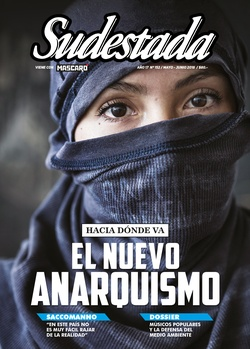

Buscar
"En este país no es muy fácil rajar de la realidad"
Si todo documento cultural es una crónica de la barbarie, como definió Walter Benjamin, entonces la literatura de Guillermo Saccomanno es un tránsito que nos permite conocer mejor las raíces de un país pleno de contradicciones y conflictos sociales nunca resueltos. De influencias culturales y discusiones cotidianas trata esta entrevista con uno de los escritores imprescindibles de nuestro tiempo. Lejos de poses y lugares comunes, Saccomanno dispara.
Edición N° 152
Mayo-Junio 2018
Revista bimensual
Comprar edición impresaSumario
- Hacia dónde va el nuevo anarquismo
- Carta a Facundo (*)
- "En este país no es muy fácil rajar de la realidad"
- Cantores de propuesta
- Cómo vencer a la realidad
- La voz embarrada del cura Mugica
- La construcción de la "mala madre"
- La oscura trama de la apropiación de niños
- "No hay más espacio para una política de conciliación de clases"
- Los mas solos de California
- Norita Cortiñas en Lomas
Compartir Articulo
La voz potente da su asistencia y lleva hacia los caminos de un oficio que se construye a base de palabras y pensamiento. Transformar la vida, quitarle el velo a la mesura del lenguaje y arrancar de cuajo lo que sobra o se dice sin decir. La literatura de Guillermo Saccomanno (Buenos Aires, 1948), contiene todas estas herramientas necesarias para convocar una lectura que sobrepase los límites de la intención. Sus historias atravesadas por imágenes que no le temen a la derrota ni al dolor, se sumergen en un universo que transita el peso de vivir a contramano.
El autor de El oficinista, entre otros títulos, no comulga con las buenas intenciones de una escritura que solo busca contar historias. El peso de sus páginas adquiere una intensidad que convulsiona las zonas de confort y lo que se pretende tan sólo como una actividad para entretener –eso que llaman leer– adquiere cuestionamientos y debates con un afuera que, a veces para no confrontar, se reviste de posturas integradas para acallar los dilemas centrales de una vida que, como diría el Indio Solari, mata el tiempo a lo bobo. Saccomanno, además de escribir y recibir premios por esa tarea, es colaborador del suplemento Radar de Página/12. Allí desempolva lecturas de libros que no se suelen mencionar asiduamente en ningún suplemento cultural y desde esas reseñas subraya su tarea de lector activo, que atraviesa la primera y la segunda línea de una primera comprensión.
–¿Cómo definís a la literatura en tu vida?
–En lo personal, me cuesta pensar hoy en términos de literatura. Qué es la literatura. Todo y nada. Muchas veces, un afán de totalizar, el verosímil de un ideal fallido: reflejar la sociedad en que se vive. La novela, aún la que se pretende más social, responde a una pulsión subjetiva. Escribir es inscribirme, la intención de hacer una marca, estampar una huella. Cuál es el sentido de una novela. Y si la novela es, como planteaba Rodolfo Walsh, un género burgués, entonces qué. Perseguir una complicidad demagógica de los lectores, ese plural que viene del marketing. No hay lectores en abstracto: hay una lectura, hay un lector. Por tanto, escribo desde la interrogación y trato, a la manera Genet, de escribir contra mí mismo. Las contradicciones, me hago cargo. Entonces, me digo, prefiero pensar en la escritura, la tensión entre el cuerpo, la historia personal y la palabra. Me importa menos el libro que la hoja en blanco. Hablo del silencio, también. Ahí están el abismo, el desierto. Si me pongo blanchotiano, diré: una escritura del desastre.
–¿Cómo atraviesan los setenta en tu literatura?
–Uno escribe con su historia y desde su historia. Uno escribe con su cuerpo y desde su cuerpo. En esa medida creo que solo puedo escribir desde mi experiencia. Pero esto puede ser una trampa también, porque los setenta fue una época lo suficientemente convulsionada y ha dado gran cantidad de textos. Algunos muy importantes. Me resulta difícil hablar de los setenta. Yo soy de los setenta pero estoy parado en la historia presente. No me propongo deliberadamente volver a esa década. El primer cuento de mi último libro, Cuando temblamos, vuelve a hacer referencia clara a los setenta. Es el de la abuela que viaja armada. Pero ese cuento surgió. La verdad que no me propongo escribir sobre eso. No es deliberado. Me parece que las marcas a veces pasan por otros lados. Uno tiene una historia política que lo impregna y la historia de un país. En este país no es muy fácil rajar de la realidad. De todas maneras no quiere decir que me considere un escritor realista, aunque esté etiquetado ahí. El oficinista, por ejemplo, no es precisamente una novela realista, va por el lado de la distopía.
–A los setenta los pensaba como materia prima política de tus textos…
–Los setenta es un lugar común, un facilismo para englobar "progresistas" de extracción diversa. Deploro que me consideren "progresista". En los setenta, hay que precisar, ser considerado "progresista" era un insulto. Implicaba, entre otras cosas, una consonancia con el Partido Comunista, su reformismo. El PC, ese partido que tenía bastante de club de bienpensantes de clase media. En los setenta, hay que distinguir, se estaba a favor o en contra de la lucha armada, toda una elección. La lucha revolucionaria podía significar una militancia estudiantil, sindical, intelectual o las armas. Desde entonces al presente hay miradas que analizan y cuestionan el período y la elección de la violencia como vía revolucionaria. Los setenta no significan un paraguas, las generalizaciones encubren contradicciones. En este punto, no se puede eludir la polémica que desató el insular Oscar Del Barco ("No matar"). Las generalizaciones, insisto, nublan.
–Parecen seguir las generalizaciones y las contradicciones en lo que resuena "progresista"
–Mi visión de la realidad es bastante sombría. Hace poco vi el discurso completo de Lula y es conmovedor. También fue conmovedor el último discurso de Cristina desde afuera de la Casa Rosada, pero con los discursos del populismo no hacemos nada porque las medidas no se han llevado a fondo. Con la emoción no hacemos nada. El discurso te emociona, pero sin ir más lejos, y a partir de la cuestión del Ni una menos y la discusión del aborto, Cristina se opuso al aborto. La situación que estamos viviendo en América Latina no es gratuita ni es casual.
–¿De qué forma creés que incide el panorama político que describís en tu literatura?
–Tengo que ver como escribo dentro un contexto convulsivo. Es muy difícil apartarse. La escritura no es un hecho aislado de la realidad. Por eso no podría decir que para mí fueron fundantes los setenta. Son fundantes los setenta como fueron los sesenta. Cuando tenía 15 años empecé a trabajar de mandadero en una agencia de publicidad y descubrí la Buenos Aires del Di Tella, los grupos de plástica. Todo lo que se venía en aquel momento. Ahí descubrí la calle, la política, la militancia, que ya venía por historia familiar porque mi viejo fue gremialista y perseguido. La historia es una cuestión en movimiento que está ahí y uno, muchas veces, se ve arrastrado y, otras veces, intenta poner una pata en el freno para la lectura y la comprensión...
(La nota completa en la edición gráfica de Sudestada... ¿Por qué publicamos apenas un fragmento de cada artículo? Porque la subsistencia de Sudestada depende en un 100 por ciento de la venta y de la confianza con sus lectores, no recibimos subsidios ni pauta alguna, de modo que la venta directa garantiza que nuestra publicación siga en las calles. Gracias por comprender)
Comentarios
Gustavo Grazioli
Articulos más vistos


LIBRERÍA SUDESTADA

Colección infantil

Distribuidora de Libros

Suscripción

Sudestada en URUGUAY

Otros articulos de esta edición
 Nota de tapa
Nota de tapa
Hacia dónde va el nuevo anarquismo
En nuestro país, la desaparición y el asesinato de Santiago Maldonado volvió a posicionar al anarquismo en la escena política. ...
 La otra Historia
La otra Historia
La oscura trama de la apropiación de niños
Mientras hoy un sector de la sociedad (muy ligada a la iglesia) se manifiesta “a favor de la vida” para ...
 Sin frontera
Sin frontera
Los mas solos de California
En la última década, Slab City ha ganado fama de mito: en pleno Desierto de Sonora, en una base militar ...
 Dossier. Músicos populares y conciencia ambiental
Dossier. Músicos populares y conciencia ambiental
Cantores de propuesta
En los últimos años, se multiplicaron las movilizaciones en la provincia de Córdoba frente a la expansión del monocultivo sojero ...
Carta a Facundo (*)
 Adelanto
Adelanto
La voz embarrada del cura Mugica
Nelly Benítez es una militante barrial con un anecdotario tan grande como su corazón murguero, construido en sus cincuenta años ...